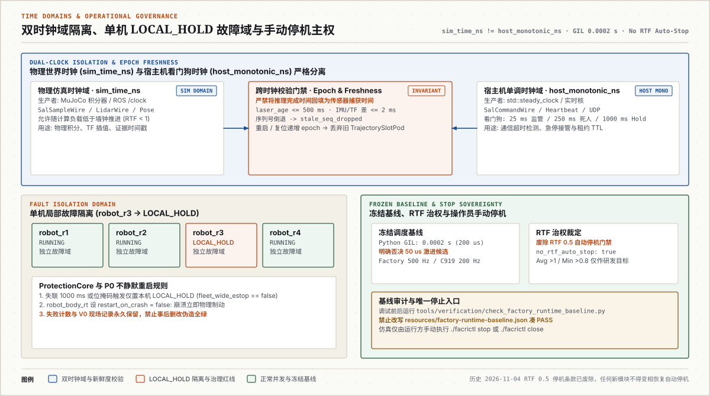

在多线程与多物理引擎并存的系统中，擅自修改调度间隔或增加自动停机阈值会掩盖真实瓶颈并破坏硬件时序。平台将核心调度参数、时钟隔离边界与停机主权收口为受工具监督的四大冻结治理规则（见
docs/development/factory-runtime-baseline.md 与
docs/development/factory-rd-frozen-features.md）。

四项核心运行时治理规则
1. 冻结调度基线与分层控制频率
Python 宿主侧 GIL 调度间隔严格锁定为 0.0002 s（明确否决
50 µs 激进候选，禁止私自调低）。场景与端侧运行频率按既定基线冻结：Smart
Factory 为 500 Hz 物理与 50 Hz 控制；C919 为 200 Hz（5_000_000
ns）物理与 50 Hz 控制；单机 robot_body_rt 保持 200 Hz
采样下发与 50 Hz
局部保护，并强制锁定内存且崩溃不静默重启；视觉观测流上限固定为最多 2
路并发流与 640×480 ROI。
2. 双时钟域隔离与代际防错
系统在共享内存线协议与状态槽内严格并列隔离仿真物理时钟（sim_time_ns）与宿主机单调时钟（host_monotonic_ns）。上游推理与规划节点在消费状态快照时必须同时验证时间差与单调代际号
epoch；一旦仿真复位、硬件重连或控制进程重建，递增后的
epoch 会立即令 robot_body_rt
丢弃一切旧代际轨迹与任务指令。
3. 废除
RTF 0.5 自动停机与操作员停止唯一主权
依据最新工程治权裁定，早期关于 RTF 0.5
自动准入或中断会话的策略已完全废止：双场景清单均固化
no_rtf_auto_stop: true，严禁在运行链中新增实时率自动停机门禁或恢复
600 秒运行上限。平均 RTF > 1 与最低 RTF > 0.8
仅作算法改进追求目标而非停机开关，仿真会话只能由操作员显式执行
./facrictl stop 或 ./facrictl close
手动终止。
4. 单机 LOCAL_HOLD
局部故障隔离
遥控死人开关租约窗口为 250 ms，带外 SafetyFrame
安全脉冲或规划心跳持续 1000 ms 超时后，单机保护状态机自动切入本机
LOCAL_HOLD 悬停保持，且强制保证
fleet_wide_estop_triggered 恒为
false。单机运动失稳或保护触发仅影响本机并如实记入统计账本，绝不连带切断其余在线机器人。